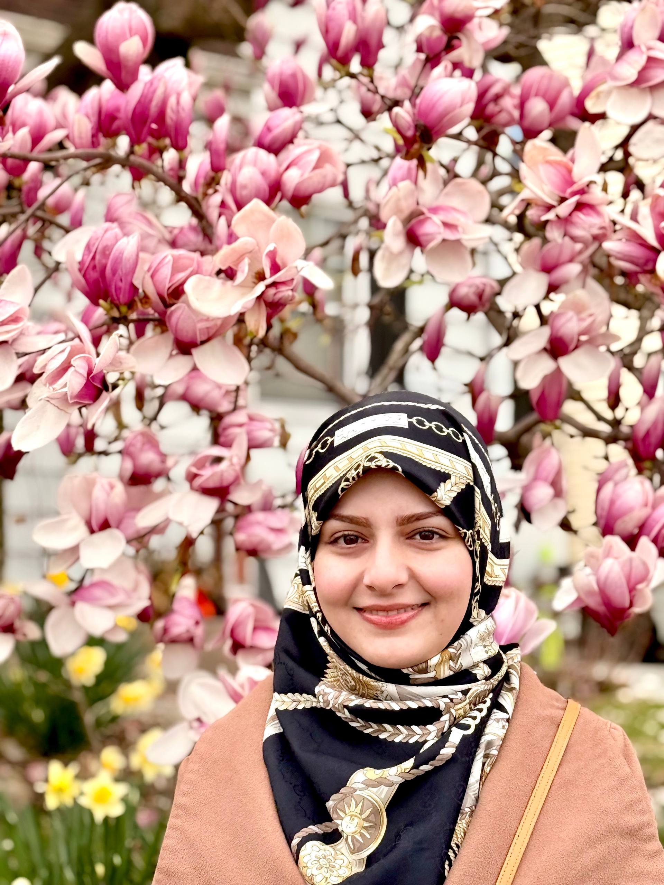

Hi! I’m Zeinab Mokhtari
Researcher | Learning Analytics Specialist | Human Resources Training Consultant
Researcher | Learning Analytics Specialist | Human Resources Training Consultant

I am interested in developmental research and in evaluating the effectiveness of interventions that enhance student learning through artificial intelligence technologies, as well as digital and non-digital games. I hold a Joint Ph.D. in Education and Educational Administration from Technische Universität Dresden and Shiraz University, an M.A. in Human Resources Training and Development from Shahid Beheshti University, and a B.A. in Educational Administration and Planning from Shiraz University.